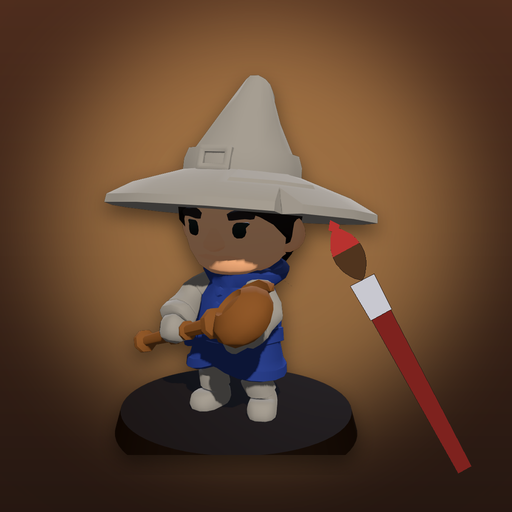

<- all projects

Mini Paint
PC
Volume
Live
Mix the colours. Paint the heroes.
The Ironvale Hobby Club has entered the Golden Brush miniature painting contest every year for forty years and never won. This year they have you, and an old ledger of paint recipes left by the club's founder, Old Wren. Each commission names a colour scheme for a mini's cloak, boots or blade. Add drops from five paint pots, watch the match grow and paint the part once it reaches 90 %. 60 commissions over six rounds, from the village hall to the final in the capital, on nine real 3D minis, plus a Daily Commission.